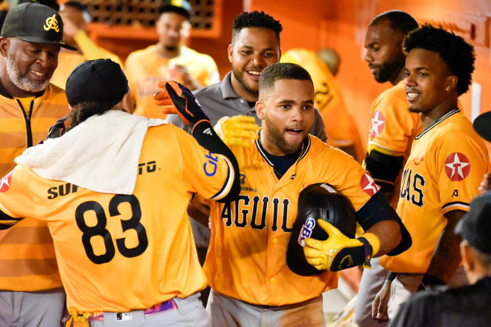
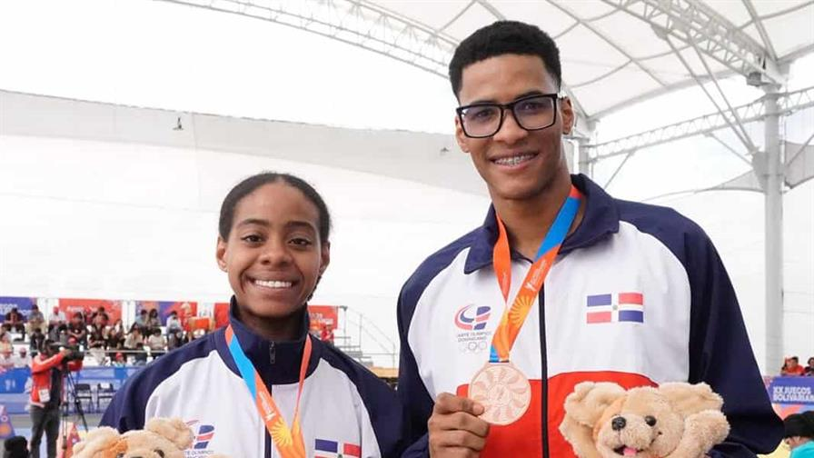
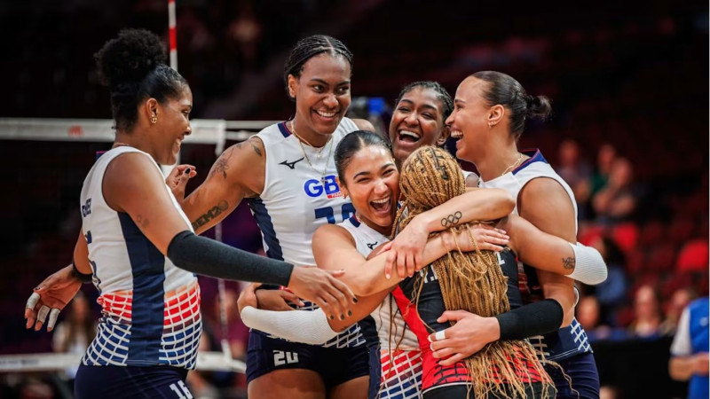

12 de octubre de 2025
Beisbol
Berroa y Durán cargan con la ofensiva y Águilas retoman vuelo y superan a los Toros
Publicado por Alex
A punta de bates y buen pitcheo, las Águilas Cibaeñas sometieron 6-4 a los Toros del Este la noche de
este miércoles en el Estadio Francisco Micheli.
El triunfo amarillo se cimentó en una ofensiva destacada. Steward Berroa fue la chispa al conectar
cuadrangular, doble y sencillo. A él se unieron Ezequiel Durán, quien impulsó tres carreras con igual
número de imparables, y Julio E. Rodríguez, que empujó dos más con un doble.
La victoria quedó en manos del abridor Drew Parrish (1-0), quien dominó a los Toros durante cinco
entradas. El encuentro formó parte del calendario del torneo 2025-2026 de la Liga Dominicana de
Béisbol.
Puntos Claves
Justin Courtney (1-1), abridor taurino, puso labor de tres entradas, cuatro carreras (una
inmerecida), cinco hits, un boleto y tres ponches. Luego lanzaron: Jimmy Yacabonis (1.0) lanzó
un cero; Greg Minier (1.1) y Michael Ynoa (0.2) lanzaron en blanco; José M. Fernández (0.0)
toleró una vuelta; Anderson Bidó (0.2), Jarlin García (1.1) y George Soriano (1.0) no
permitieron carreras.
Las Águilas tomaron la delantera rápidamente en la primera entrada, cuando S. Berroa abrió el
ataque con un sencillo. Tras robarse la segunda base, Ez. Durán lo impulsó al plato con un
sencillo al bosque izquierdo, anotando así la primera carrera del partido (1-0).
Los Toros igualaron el conteo en la parte baja de la entrada. Gilberto Celestino conectó un
sencillo y, tras avanzar a segunda por un rodado fallido de Bryan De La Cruz, se robó la
antesala. Finalmente, anotó la carrera del empate (1-1) gracias a un elevado de sacrificio de
Félix Reyes.
Los amarillos se fueron arriba 2-1 en la tercera entrada. S. Berroa conectó un doble al jardín
izquierdo, llegó a tercera base mediante estafa y luego anotó con un doble de Ez. Durán por
encima de la raya de tercera base.
Noticias Relacionadas
Lakins, Lake y González conducen al Escogido a vencer a las Estrellas Orientales
Shaun Anderson encabeza blanqueada del Licey 2-0 sobre Gigantes
Skenes recibe un récord de 3,4 millones en el fondo de bonificación prearbitral
10 de enero de 2025
Deportes
Dominicana llega a 22 medallas y se mantiene en octavo puesto de los Juegos Deportivos Bolivarianos
Publicado por Benito
Karla Ramos Jesurún y Yoan Sánchez se alzaron con medallas de plata y bronce, respectivamente, en la
modalidad individual reconocido de las competencias de taekwondo que se celebran en el Centro de
Convenciones Ayacucho, con los que República Dominicana se mantiene en la octava posición de los XX
Juegos Deportivos Bolivarianos al arribar este domingo a un total de 22 medallas.
Puntos Claves
En la rama femenina, Ramos Jesurún superó en los cuartos de final 8,050 puntos por 7,816 a
Ivanna Pérez, de Venezuela, y en la semifinal doblegó 8,399 por 8,183, a Daniela Rodríguez,
de Chile.
La atleta quisqueyana se quedó con la plata al caer en la final 8,400 por 8,599 ante Carmela
de la Barra, de Perú.
Yoan Sánchez, en reconocido masculino, obtuvo el bronce al conseguir la victoria 8,033 por
6,932 puntos sobre Che Witshire, de Barbados, en los cuartos de final, y en la semifinal fue
superado 8,233 por 8,482 tantos por el peruano Rodrigo Subauste.
En otro resultado, Karla Ramos Jesurún y Yoan Sánchez ocuparon el sexto lugar en estilo
libre pareja mixta reconocido con un total de 6,066 puntos.
Noticias Relacionadas
Juegos Bolivarianos: bádminton, softbol y vela brillan: República Dominica alcanza 14
medallas
Polanco resalta esfuerzos atletas en Juegos Bolivarianos
Ecuestre logra su objetivo de clasificar en los Juegos Bolivarianos
16 de mayo de 2025
Volleyball
Proyecto de Voleibol Femenino manejó RD$ 92 millones en el 2024
Publicado por Juan
El Proyecto de Selecciones Nacionales Femeninas de Voleibol tuvo en el año 2024 ingresos de 92
millones 807 mil, 972 pesos con 52 centavos.
Así lo establece el informe financiero enviado por el presidente del proyecto, Cristóbal Marte, al
licenciado Alexis García y al profesor Nelson Ramírez, titular y secretario general,
respectivamente, de la Federación Dominicana de Voleibol (Fedovoli).
Puntos Claves
El mayor soporte económico lo hizo el Ministerio de Deportes y Recreación (Miderec) por el
monto de 35 millones, 897 mil, 528 pesos con 30 centavos, de los cuales RD$25, 824,727.00
fueron para cubrir gastos de participación en eventos internacionales y nacionales.
El informe específica que en el mismo se incluye la subvención fija entregada por Miderec a
Fedovoli, ascendente a 204 mil pesos mensualmente, que al año alcanzó la suma de 2 millones,
448 mil pesos.
Asimismo, el aporte para cubrir el pago de de los boletos aéreos utilizados por la selección
nacional para su participación en el Campeonato Clasificatorio para los Juegos Olímpicos,
que tuvo lugar en Ningbo, China 2023 por valor de 3 millones, 877 mil 89 pesos.
“Quien suscribe y los patrocinadores durante el año 2024 realizaron aportes por la suma
total de RD$28, 848,651.30 (28 millones, 848 mil, , 651 pesos), a fin de cubrir
satisfactoriamente los gastos generales y administrativos del Proyecto Nacional de Voleibol
Femenino de la República Dominicana”, resalta Marte Hoffiz.
Noticias Relacionadas
Puerto Rico vence 3-1 a RD y logra bronce en el Continental NORCECA Sub-17
Dominicana dispone 3-0 a Surinam y eleva marca a 2-0 en el NORCECA femenino Sub-17
Navarrete y Tamboril, campeones del Torneo Intermunicipal de Santiago